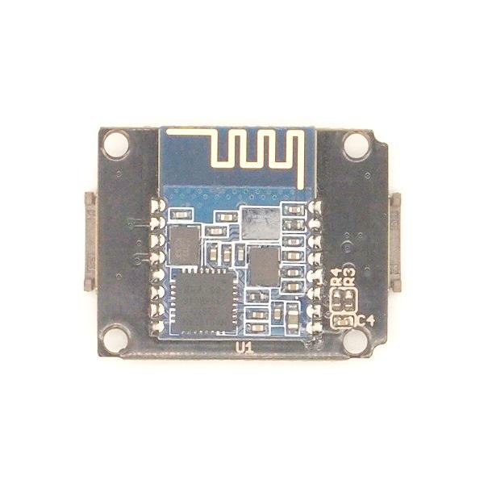

Xadow - BLE (dual model) v1.0 uses CSR dual mode Bluetooth chip,with the ARM architecture
single chip which supports AT instructions, Users can develop flexibly according to the serial baud rate, equipment name, pairing password.

BT Version: Bluetooth Specification V4.0 & BLE
UART send and receive max bytes is 512
Other device to module in SPP mode: 90 Bytes per packet
Other device to module in BLE mode: 20 Bytes per packet
Two data transmission mode, balance mode and high speed mode
Working frequency: 2.4GHz ISM band
Modulation method: GFSK(Gaussian Frequency Shift Keying)
RF Power: -23dbm, -6dbm, 0dbm, 6dbm.
Speed: Asynchronous: 3K Bytes
Synchronous: 3K Bytes
Security: Authentication and encryption
Service: Slave SPP, Peripheral BLE, UUID FFE0,FFE1
Power: +3.3VDC 50mA
Long range: SPP 30 meters, BLE 60 meters
Power: SPP 13.5mA, BLE 9.5mA
Working temperature:–5 ~ +65 Centigrade
K2:During connected status,It would be disconnected by pressing K2 more than 100ms.During sleeping model,It could be restored through pressing K2 factory settings.
D1:The led display two work models:
sleeping whit It slowly flashing;connected status whit It continuously lighting.
J1&J2:The standard Xadow connector.
The supply voltage of this module is 2.5V ~ 3.7V, higher than this may cause permanent damage to the device.BLE transmission speed is slower than SPP transmission, so we selected the lower one in the design, in accordance with the speed of a BLE dual-mode product planning.
The Xadow - BLE has a standard Xadow interface with lead pitch, we use a Xadow - Breakout to convert it to Grove socket.
As Xadow interface is a axial symmetry port, so it's necessary to comply with the assembly direction, please refer to below picture.
Connect the Xadow BLE Slave to Xadow - Main Board and connect Main Board to PC with a USB cable.
Note: when connect Xadow - BLE to Xadow Main Board, you should concern about the connection direction. The connection method is that the unfilled corner of one xadow module need to connect to the right angle of another module(see four corners of each xadow module).
1. Test Command
| Send | Receive | Parameter |
|---|---|---|
| AT | OK/ER/Disconnect link | None |
If module is not connected to remote device will receive: “OK”
If module has an error, will receive: “ER”
If Module has connected, module will disconnected from remote device, if “AT + NOTI” is setup to 1, will receive information string
2. Query module EDR address
| Send | Receive | Parameter |
|---|---|---|
| AT+ADDE? | OK+ Get: MAC | None |
3. Query module BLE address
| Send | Receive | Parameter |
|---|---|---|
| AT+ADDB? | OK+ Get: MAC | None |
4. Query/Set Authentication mode
| Send | Receive | Parameter |
|---|---|---|
| Q: AT+AUTH? | OK+ Get:[P1] | P1: 0, 1, (Default: 0) 0 – Not authentication |
| S: AT+AUTH[P1] | OK+ Set:[P1] |
AT+AUTH0: allow made an insecure connection.
AT+AUTH1: every connection must with authentication.
5. Query/Set A to B mode
| Send | Receive | Parameter |
|---|---|---|
| Q: AT+ATOB? | OK+ Get:[P1] | P1: 0, 1, (Default: 0) 0 – Not Open ATOB |
| S: AT+ATOB[P1] | OK+ Set:[P1] |
This command must work with AT+MODE0 command. When A device (SPP mode) connect to the module and B device (BLE mode) is also connect to the module, The data string from A device send to the module will send to B device. The data string from B device send to the module is also send to the A device.
6. Query/Set baud rate
| Send | Receive | Parameter |
|---|---|---|
| Q: AT+BAUD? | OK+ Get:[P1] | P1: 1~7, (Default: 6). 1 - 4800 |
| S: AT+BAUD[P1] | OK+ Set:[P1] |
7. Clear bond information
| Send | Receive | Parameter |
|---|---|---|
| AT+BONDE | OK+BONDE | Clear EDR bond info |
| AT+BONDB | OK+BONDB | Clear BLE bond info |
BLE mode not supports it yet.
8. Clear Last Connected EDR Device Address
| Send | Receive | Parameter |
|---|---|---|
| AT+CLEAE | OK+CLEAE | None |
9. Clear Last Connected BLE Device Address
| Send | Receive | Parameter |
|---|---|---|
| AT+CLEAB | OK+CLEAB | None |
10. Query/Set Module DUAL Work Mode
| Send | Receive | Parameter |
|---|---|---|
| Q: AT+DUAL? | OK+ Get:[P1] | P1: 0, 1, (Default: 0) 0 – Allow dual connect. |
| S: AT+DUAL[P1] | OK+ Set:[P1] |
AT+DUAL0: allow two connections at same time (SPP and BLE).
AT+DUAL1: Only allow one connection at same time (SPP or BLE)
11. Query/Set hardware flow control switch
| Send | Receive | Parameter |
|---|---|---|
| AT+FIOW? | OK+ Get:[P1] | P1: 0, 1,(Default: 0) 0: Hardware flow control off |
| AT+FIOW[P1] | OK+ Set:[P1] |
12. Query/Set module data transmission speed mode
| Send | Receive | Parameter |
|---|---|---|
| AT+HIGH? | OK+ Get:[P1] | P1: 0, 1,(Default: 0) 0: Balance mode |
| AT+HIGH[P1] | OK+ Set:[P1] |
In balance mode, we balanced SPP and BLE with a steady speed.
In high speed mode, we don’t control speed, so SPP mode will got high speed.
In high speed mode, module lost RESETB pin function, but you still could use
“AT+RESET” command to reset module.
13. System Help Information
| Send | Receive | Parameter |
|---|---|---|
| AT+HELP? | Help Information | None |
14. Query/Set module loaded notify
| Send | Receive | Parameter |
|---|---|---|
| AT+INIT? | OK+ Get:[P1] | P1: 0, 1,?, (Default: 0) 0: Loaded notify 0ff |
| AT+INIT[P1] | OK+ Set:[P1] |
When “AT+INIT1” is setup, after module loaded, module will output “OK+INIT” string through UART.
15. Query/Set Module Work Mode
| Send | Receive | Parameter |
|---|---|---|
| Q: AT+MODE? | OK+ Get:[P1] | P1: 0, 1, (Default: 0) 0 – Data transmission. |
| S: AT+MODE[P1] | OK+ Set:[ P1] |
AT+MODE0: Only transfer data when connection establishment.
AT+MODE1: Transfer data and response AT commands.
16. Query/Set Notify information
| Send | Receive | Parameter |
|---|---|---|
| Q: AT+NOTI? | OK+ Get:[P1] | P1: 0, 1, (Default: 0) 0: Don’t Notify |
| S: AT+NOTI[P1] | OK+ Set:[ P1] |
After AT+NOTI1, module will send connect or disconnect string through
UART when module state is change:
OK+CONE ======== EDR connect
OK+LSTE ========= EDR disconnect
OK+CONB========= BLE connect
OK+LSTB ========= BLE disconnect
OK+LSTA ========= except disconnect, module will reset after 500 ms.
17. Query/Set notify mode
| Send | Receive | Parameter |
|---|---|---|
| Q: AT+NOTP? | OK+ Get:[P1] | P1: 0, 1; default: 0 0: without address |
| Q: AT+NOTP[P1] | OK+ Set:[ P1] |
This command must work with “AT+NOTI1”, if this switch is open, when the module connect to disconnect, the prompt string will include the remote address.
18. Query/Set Module EDR name
| Send | Receive | Parameter |
|---|---|---|
| Q: AT+NAME? | OK+ Get:[P1] | P1: module EDR name, Max length is 12. |
| Q: AT+NAME[P1] | OK+ Set:[ P1] |
19. Query/Set Module BLE name
| Send | Receive | Parameter |
|---|---|---|
| Q: AT+NAMB? | OK+ Get:[P1] | P1: module BLE name, Max length is 12. |
| S: AT+NAMB[P1] | OK+ Set:[ P1] |
20. Query/Set PIO1 output status (System LED)e
| Send | Receive | Parameter |
|---|---|---|
| Q: AT+PIO1? | OK+ Get:[P1] | P1: 0, 1 0: Unconnected Output 500ms High 500ms Low, Connected output High. |
| S: AT+ PIO1 [P1] | OK+ Set:[ P1] |
21. Query/Set PIO output status
| Send | Receive | Parameter |
|---|---|---|
| Q: AT+PIO[P1]? | OK+ Get:[P1][P2] | P1: 2~B (HM-12) P2: 2~3 (HM-13) |
| S: AT+ PIO[P1][P2] | OK+ Set:[P1][P2] |
22. Query/Set EDR Pin Code
| Send | Receive | Parameter |
|---|---|---|
| Q: AT+PINE? | OK+ Get:[P1] | P1: module EDR Code Max length: 6 |
| S: AT+PINE[P1] | OK+ Set:[P1] |
23. Query/Set BLE Pin Code
| Send | Receive | Parameter |
|---|---|---|
| Q: AT+PINB? | OK+ Get:[P1] | P1: module BLE Code 000000~999999 |
| S: AT+PINB[P1] | OK+ Set:[P1] |
24. Query/Set UART parity bit
| Send | Receive | Parameter |
|---|---|---|
| Q: AT+PARI? | OK+ Get:[P1] | P1: 0, 1, 2, (Default: 0) 0: Parity None |
| S: AT+PARI[P1] | OK+ Set:[P1] |
25. Restore all setup value to factory setup
| Send | Receive | Parameter |
|---|---|---|
| AT+RENEW | OK+RENEW | None |
26. Restart module
| Send | Receive | Parameter |
|---|---|---|
| AT+RESET | OK+RESET | None |
27. Query BLE RSSI value
| Send | Receive | Parameter |
|---|---|---|
| AT+RSSB? | OK+RSSB: [P1] | P1: RSSI value 9999: No connection |
This command must use after “AT+MODE1” is setup. This command is only used by remote Bluetooth device. 28. Query EDR RSSI value
| Send | Receive | Parameter |
|---|---|---|
| AT+RSSE? | OK+RSSE: [P1] | P1: RSSI value 9999: No connection |
29. Query Last Connected EDR Device Address
| Send | Receive | Parameter |
|---|---|---|
| AT+RADE? | OK+Get:MAC Address | None |
30. Query Last Connected BLE Device Address
| Send | Receive | Parameter |
|---|---|---|
| AT+RADB? | OK+Get:MAC Address | None |
31. Query/Set Master and Slaver Role
| Send | Receive | Parameter |
|---|---|---|
| AT+ROLB? | OK+ Get:[P1] | P1: 0, 1 (default: 0) 0: Peripheral |
| AT+ROLB[P1] | OK+ Set:[P1] |
This command will take effect after module next power on or reset. 32. Query/Set EDR work mode
| Send | Receive | Parameter |
|---|---|---|
| Q: AT+SCAN? | OK+ Get:[P1] | P1: 0, 1, (Default: 0) 0: Discovery and connectable |
| S: AT+SCAN[P1] | OK+ Set:[P1] |
33. Query/Set UART stop bit
| Send | Receive | Parameter |
|---|---|---|
| Q: AT+STOP? | OK+ Get:[P1] | P1: 0, 1, (Default: 0) 0: 1 stop bit |
| S: AT+STOP[P1] | OK+ Set:[P1] |
34. Query Software Version
| Send | Receive | Parameter |
|---|---|---|
| AT+VERR? AT+VERS? |
Version Information | None |
This section shows how to configure Bluetooth with PC, some basic methods of setting could be learn.
Set up hardware connection refer to “Hardware Installation” section. You will find the blue LED on the module flashes illustrate no connection is set up.
Open a serial terminal and set Baud Rate:115200, Databits: 8, Stopbits: 1 and No Flow Control. Send “AT” to Bluetooth with the serial terminal and “OK” will be return if all goes well. The Bluetooth only respond AT commands when no connection was set up, or all commands were seen as string and sent out. You can distinguish the status through LED indicates.
Then some useful configurations could be sent. Here’s are some samples of commands and response.
1. Test serial connection, send “AT”, will return “OK”.
2. Restore factory settings, send “AT+RENEW”, return “OK+RENEW”.
3. Reset baud rate of serial port, send “AT+BAUD2”, return “OK+Set:2”.
4. Enable authentication, send “AT+AUTH1”, return “OK+Set:1”.
5. Reset the Bluetooth, send “AT+RESET”, return ”OK+RESET”.
6. Query firmware version, send “AT+VERS?”, return “OK+Get:HMSoftV217”.
7. Query MAC of EDR, send “AT+ADDE?”, return “OK+Get:000E0E002074”.
8. Query MAC of BLE, send “AT+ADDB?”, return “OK+Get:000E0B002074”.
9. Set the name of EDR, send “AT+NAMEHM-13-EDR”, return “OK+Set:HM-13-EDR”.
10. Set the name of BLE, send “AT+NAMEHM-13-BLE”, return “OK+Set:HM-13-BLE”.
11. Set the password of EDR, send “AT+PINE123451”, return “OK+Set:123451”.
12. Set the password of BLE, send “AT+PINB123451”, return “OK+Set:123451”.
13. Enable discovery and connectable, send “AT+SCAN0”, return “OK+Set:0”.
14. Enable notify information of connection, send “AT+NOTI1”, return “OK+Set:1”.
15. Notify information include address, send “AT+NOTP1”, return “OK+Set:1”.
16. Enable user key, send “AT+PIO01”, return “OK+Set:1”.
17. Set to Central mode, send “AT+ROLB1”, return “AT+ROLB1”.
Or Set to Peripheral mode, send “AT+ROLB0”, return “AT+ROLB0”.
We use two Bluetooth connected with PC, one was set as Central while the other is Peripheral. Several seconds later they find each other and the LED stop flash, connected!
This kind of Bluetooth module has two protocol: Bluetooth EDR(Enhanced Data Rate) and Bluetooth Low Energy. It can communicate with any device has one of these protocols. Some Android phone with OS higher than 4.3 and iPhone4 or later have BLE ability. We use a iPhone to demonstrate how to use a cellphone to interact with Bluetooth.
Power the Bluetooth and configure it as Peripheral role. Search LightBlue in Apple Store and install it. Launch the app, you may find “HM-13-BLE” which we just renamed. Touch it to connect, then touch “Properties” to control it. The key “Hex” on the top right is for change data format, maybe String is easy to see. Hit “Listen for notifications” to enable data receiving. Then we can send data to PC through BLE, hit “Write new value” and write some words. Also PC can transfer data to iPhone with serial terminal.
Are you ready to code? It’s time to do something after practice. Prepare a pair of Bluetooth, and Arduino or other platform to control them. Here we use two Arduino Uno.
Set up the connection as mentioned in section “Hardware Installation”.
The program of Central and Peripheral use the same code, the only difference is the micro define at the beginning of the program. To assign the Bluetooth to Central role, Just need to modify the text to “#define MASTER 1”, or “#define MASTER 1” if Peripheral role was assigned.
The initialization program flow please refer to the following flow chart. First of all we need to distinguish the presetting baud rate of the Bluetooth. After this, send commands to restore factory settings, and change baud rate from 115200 to 9600 since software serial will not working well at high baud rate. Then other parameters were configured to the Bluetooth with Reset command in the final.
After the initialization, the Central and Peripheral will do different things, the Central will send message to Peripheral interval and print what received from Peripheral while the Peripheral only responds the Central.
Click here to download the test code and open HM-13_SW.ino with Arduino IDE, compile and download to Arduino Uno. Remember to configure the Bluetooth to different role by modify the macro at the beginning. If you have any problem about how to start Arduino, please click here for some help.
After downloading program, open two serial terminal windows, the LEDs on Bluetooth will flash, several seconds later, they stop to flash and keep on, this indicates that they connected to each other. According to the program is written, the Central sends message to the Peripheral continually and get feedback every time.
If you have questions or other better design ideas, you can go to our forum or wish to discuss.
Copyright (c) 2008-2016 Seeed Development Limited (www.seeedstudio.com / www.seeed.cc)